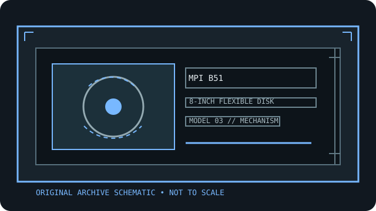

[ INDIVIDUAL COMPONENT // FLOPPY DRIVES ]
MPI B51 8-inch flexible disk drive
This record identifies a real, model-specific 8-inch diskette mechanism. Format capacity and host fit depend on the documented revision, interface options, controller, recording mode, and media; values are not inferred from form factor alone.

IDENTIFICATION NOTE: MPI B51 is a bare mechanism/drive model, not a generic PC floppy peripheral. Match the full label, PCB revision, connector and voltage configuration to the cited manual before connecting or servicing it.
Model specifications
| Catalog subcategory | 8-inch floppy mechanisms |
|---|---|
| Exact model / family | MPI B51 8-inch flexible disk drive |
| Disk format and capacity | 8-inch flexible disk drive. The B51/B52 product manual lists single- and double-density recording and unformatted-capacity tables; formatted capacity depends on the selected surface, encoding, sector layout, and host format. Use the table for the exact B51 configuration. |
| Host interface | The B51/B52 manual gives a dedicated signal interface and separate DC power connector (J1/J2); use its wiring/pin-assignment tables rather than assuming a PC 34-pin interface. |
| Data rate | The OEM recording table specifies data-transfer rate by recording method/density. Match the controller’s FM or MFM mode and timing to that table; do not use a generic PC data-rate assumption. |
| Drive select / jumpers | The manual documents Drive Select 1–4 and programmable shunts/options. Set exactly one select line for each unit, and configure head-load, termination, and ready/index options from the B51 board revision documentation. |
| Dimensions / mounting | Manual outline drawing gives the B51/B52 envelope, mounting holes, and front-door clearance. Confirm the specific B51 frame and dimension units before rack or cabinet installation. |
| Power requirements | B51 uses dedicated +5 VDC and +12 VDC through its DC connector; use the manual’s voltage/current limits and confirm the connector pinout. Never substitute a cable based on physical resemblance. |
| Controller / host compatibility | A host controller must provide the MPI interface signals and an 8-inch recording format supported by B51. The manual is the compatibility authority; controller, termination, select number, and disk format all have to agree. |
Model-specific compatibility checks
- Record the complete model suffix, serial/date code, board revision, connector keying, and all drive-select or option links before installation.
- Confirm controller signaling, line termination, host drive-select assignment, recording density, sector geometry, and the manual’s power connector pinout as a single compatible configuration.
- Do not connect by connector shape alone. An 8-inch drive may require non-PC signal conventions, additional DC rails, or a mains-rated supply; follow the model documentation.
Preservation and safety notes
The drive is a precision mechanism: avoid stressed mounting, dirty media, and undocumented head adjustments. Photograph shunts and connectors; use a tested sacrificial disk and preserve source media before any write operation.
For archival work, preserve original media in its native format, make a verified read-only acquisition first, checksum retained copies, and log the drive, controller, software, media condition, and any service or conversion performed.
Manufacturer manuals & archive sources
- MPI B51/B52 Flexible Disk Drive Product Manual (Internet Archive)OEM product manual covering Model 51/52 capacity, interface, power, dimensions, and options.
- MPI B51/B52 Product Manual, alternate archival catalog recordSecond archival catalog record for the 1980 MPI manual; compare revision against the installed drive.
Consult the exact model/revision manual before applying electrical or service values. Family references are useful only where their coverage matches the marked unit.